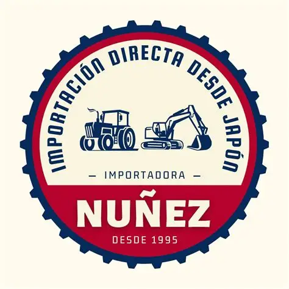

Energía y telecomunicaciones
Requerimientos asociados a paneles solares, estructuras, tramos de torre, equipos y componentes para proyectos.
Transporte de equipos ↗La presentación comercial de FACAI reúne participación como partner logístico en proyectos industriales, energéticos, sanitarios y de infraestructura.
Evaluar mi traslado ↗Requerimientos asociados a paneles solares, estructuras, tramos de torre, equipos y componentes para proyectos.
Transporte de equipos ↗Experiencia vinculada a plantas de tratamiento, desalación, obras civiles e infraestructura hídrica.
Cargas de proyecto ↗Coordinación de maquinaria, equipos industriales, estructuras, maestranzas e importaciones.
Transporte desde puertos ↗Entre los antecedentes consignados por FACAI se encuentran operaciones vinculadas a infraestructura sanitaria, centrales hidroeléctricas, parques fotovoltaicos, industria y traslado de maquinaria.
La presentación menciona, entre otros, Aguas del Altiplano, Hidroangol, Universidad de Antofagasta y Maestranza Bravo como referencias de proyectos o instalaciones con participación logística.
Estas referencias no implican una contratación directa, un aval comercial ni el uso autorizado de marcas de terceros. El rol y alcance de cada participación deben documentarse antes de publicar un caso detallado.
Consultar presentación comercial ↗Una necesidad concreta. Una propuesta acorde a tu operación.
Recorre las imágenes a tu ritmo. Avanzan cada 5 segundos; también puedes usar las flechas o deslizar en tu teléfono.
Imágenes de referencia · Encuadre completo · Selecciona una foto para ampliarla.
